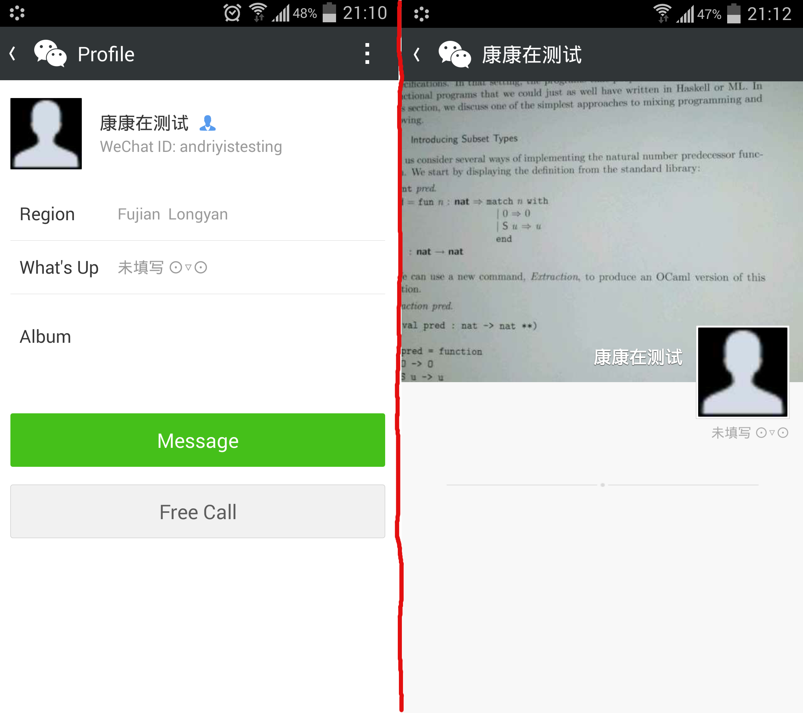

顾名思义.. 就酱
0. Motive
名词定义：
- 拉黑：加入黑名单（Block）
- 朋友圈拉黑：朋友圈权限（Moments Options）里，不让他（她）看我的朋友圈（Don’t Share my Moments）
- 朋友圈屏蔽：朋友圈权限（Moments Options）里，不看他（她）的朋友圈（Hide User’s Moments）
机缘巧合之下，我发现有4个微信好友朋友圈拉黑了我.. >_< 不甘心的我，于是….于是决定测试一下微信内各种屏蔽/拉黑时看到的界面是啥样的 O.O
我自己没有拉黑任何人，这样单向的墙让我觉得不对等，伐开心！！在同样朋友圈拉黑他们之前，我得先确认下我看到的页面真的表示被朋友圈拉黑了，避免误伤！
Update 10/17/2014: 算了算了，朋友圈拉黑就拉黑吧，我也懒得拉回来了，不过心里还是有些不是滋味啊。
Update 11/24/2014: 其实当不再把微信当做“私密”社交app的时候、当点赞之交都不算的联系人越来越多的时候，被朋友圈拉黑什么的我已经不在意了啦。PS: 但是你主动加我还拉黑的话我还是不能忍的哦！
Update 01/27/2015: 知道这篇真的能帮到人，我很开心~ 士气max!
Update 08/09/2015: 补充了下关于停用朋友圈的说明。（一转眼已经过了一年多了呀）
Update 11/15/2015: 添加了双方互删好友（未拉黑）之后的描述。
1. 环境准备
正好我有一台从国内带来的破手机，ME525.. 两台Android手机上的微信版本都是5.3.1，在其他系统上的反馈应该完全一样吧，我相信大公司的实力
然后还需要一个新的微信帐号。在最新版本的微信中，已经无法通过QQ号注册了，只能通过手机，而我唯一的号码已经绑定在主微信号上了。按网上的教程去下载4.5及之前的版本也不行，下载到的apk也已经没有了用QQ号注册的选项了。
所幸，还有一个Facebook Connect的选项，注册一个fb帐号就容易多了嘛。
2. 被拉黑之后呢
首先，被朋友圈拉黑后，我看到的界面是这样的，即使他在朋友圈中有发过照片，在相册一栏的缩略图仍然是空白的，点进相册中，原本显示他的状态的区域，现在被
-------- · --------
这样的点横线所取代，如下图所示：

BUT, 能否说出现这样的点横线时，就可以确认是因为我被屏蔽了呢？在不知道微信源代码的情况下，没人能给出确切答案。不过，我整理了好些个情境，应当足以尽可能的还原出各种不同情况以辅助判断了
3. 情境测试
以下都是我实测过的，不过没有图，就是懒的截，你来咬我吧 XD
3.1 对方从未使用过朋友圈
我在对方的主页根本就看不到进入到朋友圈的入口
3.2 对方未在朋友圈发布过状态，但是评论了我的状态
我在评论里是可以点击他的名字进入他的朋友圈的，这个时候看到的画面与被他朋友圈拉黑一样的，空空荡荡的点横线
但是由于对方没有历史状态，在他的个人详细信息页面是没有朋友圈的入口的
另外，这个时候他的朋友圈页面里，名字可能是用深蓝色显示的：从timeline里点进去是白色的，但是一旦从提醒里进入过我的状态的页面，再点进去他的主页，就变成深蓝色的字体了..
3.3 对方仅仅设置过朋友圈的封面图片，未发表过任何状态
仍旧在对方主页看不到进入朋友圈的入口
3.4 对方仅仅发表过文字状态（文字状态无法选择分组等等）
在对方主页，可以看到朋友圈的入口了，但由于没有发表图片，这一栏的缩略图是空白，点进去后可以看到刚发的文字状态
注：由于是发表第一条状态，在刚发完的时候，我看对方的详细信息页面，仍旧没有朋友圈的入口，即使我在timeline里已经刷出来了。过一会就有了，目测这俩数据之间只是eventual consistent..
3.5 对方发照片，可见范围为「公开」
这是正常使用情境，没被朋友圈拉黑的话就一切正常，都看得到啦
3.6 对方发照片，可见范围为一个自定义小组，其中没有我
当然就看不到这一张照片啦，我在timeline里、在他的主页里点进去都看不到了
另外经实测，如果对方发过的所有状态都是分组的（其中没有我），那么我看到他的界面和被朋友圈拉黑是一样的，相册缩略图为空白，点进去之后是空空荡荡的点横线。毕竟这种情况和被朋友圈拉黑没区别嘛..
3.7 对方发照片，在黑名单中添加了我
这个时候我已经被「朋友圈拉黑」了，他最新的状态我已经看不到了。他之前发过的，曾出现在我的timeline里的那些状态，在刷新之后也会消失！之后我点进他的详细资料页面，已经是空白缩略图的相册了，点进去也是点横线分隔的空白了
3.8 对方解除朋友圈拉黑
刚才他发布的那张图片，就是添加我到黑名单的那一张，在timeline里仍旧看不到，但是点击到他的个人页面里就看得到了！其它之前timeline里看得到的状态也都恢复可见了
3.9 我朋友圈拉黑他之后，还能看到他的状态吗？（没被他朋友圈拉黑的前提下）
可以的，所以说朋友圈拉黑的操作是单向的嘛
微信快推出一个「双向拉黑」的功能呀！
3.10 我朋友圈屏蔽他之后，点进他的主页还看得到他的最新状态吗？（没被朋友圈拉黑的前提下）
可以的
3.11 我朋友圈屏蔽了他，但并没有朋友圈拉黑他，他还看的到我的状态吗？
// 谢谢@declanVox提醒
顾名思义嘛，是可以的
3.12 对方删除全部状态之后我看到的是什么样子？
在短时间内（在删除完毕后马上刷新），和被朋友圈拉黑的界面是一样的，相册一栏的缩略图是空白，我依旧能够点击进入他的朋友圈，看到的也是那样的空空荡荡的点横线
但是过了一会儿后再看，对方的详细信息页面里，朋友圈的入口已经消失了！！
这就是为啥有网友说删除全部状态之后也是和被拉黑一样，他们等的不够久！╮(╯_╰)╭
3.13 对方停用朋友圈之后呢？
经实测，对方停用朋友圈之后，我的timeline里曾经加载过的他的状态，刷新之后还在，还能点赞回复，点到他的主页里，也仍然能够看到朋友圈入口，点进去状态也都在…. 除此之外，通过其它app里的「分享至朋友圈」的选项，还是能够间接发状态的.. 所以这「停用」仅仅指的是关闭了用户自己的入口罢了。 =.=
在 设置->通用->功能 里可以选择停用朋友圈，微信会提示「停用该功能同时将清空历史数据」（注：每一个功能停用都会提示这句）。我记得在旧版本的微信里，是弹出对话框说「会删除历史数据」，我曾经在13年5月写毕设的时候闭关停用朋友圈.. 后来恢复后历史状态都还在。（注：我不保证在以后的版本中停用后重新启用也一定能恢复所有历史状态）
3.14 对方把我「删除联系人」之后呢？
对方把我删除之后，我不会收到任何通知，并且就好像他把我朋友圈拉黑了一样，我看不到他的朋友圈了。但是由于我这里还显示他是我的好友，所以他(somehow)进入我的朋友圈还能看到我的状态，直到我也把他删除联系人或者朋友圈拉黑..
另外，两边都删了之后，如果还能somehow看到他的朋友圈，里头会说「非好友最多显示10张照片」(Only 10 posts of this user are visible)..
3.15 双方互删联系人之后呢？
谢谢@半只西瓜 提出的情境。问题是这样的：
如果双方互相删除了微信，在以前对方点过赞的moment下面再回复一条的时候，对方看得见提醒吗？如果还是朋友的话肯定应该看得到，如果不是朋友了，不知道是不是还有消息提醒？谢谢。
经过测试，效果是这样的：
- 首先两人互为好友，B在A的状态下评论+点赞。然后两人互删好友。
- B留下的回复和点赞都被“隐藏”了，在A看来，B从未回复过。
- 但是如果两人重新加为好友的话，回复就又出现了，所以只是隐藏。
- 在不为好友的期间，如果A在这条状态下评论，B是收不到提醒的，即使之后重新加为好友，这个评论的提醒也是不会重新出现的。
- 但是重新加为好友之后A的评论等等，B又是收得到提醒的了。
总结：都互删好友了，相忘于江湖吧。:)
3.16 对方添加我为好友（我的设置为：不需要验证），而我还没有加回去（假设他没有朋友圈拉黑我）
我能够看到他的朋友圈，他看不到我的..
另外，说什么能看陌生人10张照片，即使这个设置开启了我怎么还是看不到啊？？
3.17 对方添加我为好友（我的设置为：需要验证），而我还没有同意（假设他没有朋友圈拉黑我）
对方会出现在 通讯录->新的朋友 里，但是我看不到他的朋友圈，两边互相都看不到.. 即使我现在修改为不需要验证还是不行..
3.18 对方把我拉黑(Block)之后呢？
对方仍旧可以给我发消息，但是我发过去的消息会提示「消息xxx已发出，但被对方拒收了」。这样的不对等实在是太虐了..
有趣的是，除了有被朋友圈拉黑的效果之外，我在点击进入他的朋友圈之后，会先看到「非好友最多显示10张照片」的字样，再换成一条横线….
另外，对方看我的详细信息页面也看不到相册那一栏了
4. 结论
在测试发照片分组可见的时候，我想到一种可能性，此好友的某一张照片不想让我看到，于是在发布那一条状态的时候在黑名单中添加了我，或许以为这是个临时的设置，之后就不再管了。他不知道这个行为是永久的，再也没有去解除
由此还存在另一种可能性，假设对方只发过一两张照片，并且设置的是分组可见，之后就再也没发过状态了，这样的情况下我所观测到的，就好像是我被他朋友圈拉黑了一样.. 这种可能性比较低的原因在于，分组发布是高阶技能，第一次发状态的人直接就使用的概率实在不大。另外这和被朋友圈拉黑也没有事实上的区别..
以上是我最美好的想象了..
其实也还存在一种可能性，是对方认不出我是谁，于是把我删除好友了，于是我就自动获得了被朋友圈拉黑的效果.. 我在微信上就不加不认识的人，所以这也是有可能的说
综上所述，我有92.12%的把握声(xia)称(shuo)：
如果长时间保持「相册缩略图空白，点进之后只有一条点横线」的情况，那么你就是被他/她朋友圈拉黑了！
5. 反思
首先反省一下，有没有可能是自己作死从而被人朋友圈拉黑的呢？
- 我不发代购状态
- 我不刷屏，绝大部分状态都是原创
- 我不发各种自拍 o_O
- 我单身，也没法秀恩爱秀娃什么的…. >_< （01/2018 即使已经不是了也还是不会秀的！）
- 我穷，也没钱炫富…. >_<
- ……
嗯.. 这口锅，我不想背！！
平胸而论，拉黑他人是个人的自由，也许你的状态只给特定的人看（比如说男神女神, if any），这些都无可厚非，我都能理解。不过自由不是没有代价的
在我的价值观里，朋友之间应当是平等的，朋友圈的定位是私密/熟人社交，我开放了我的私人状态，却没有得到来自我所认为是朋友的人的对等的地位，也没有任何解释，我感觉到了一丝挫败感..（对，就是心好累！）
LZ冒着被说玻璃心的风险完成了以上情境测试：
我不是为了拉黑不拉黑，我就是认真！